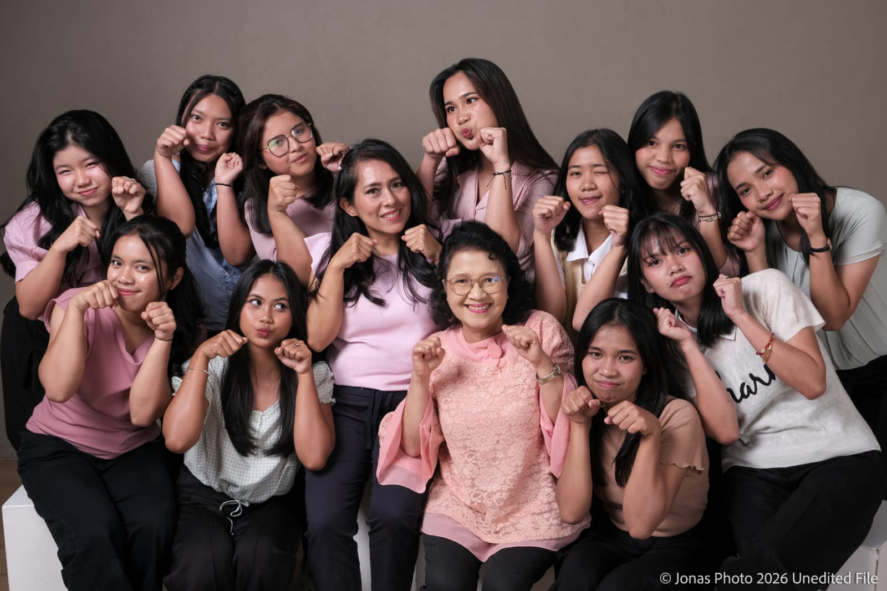
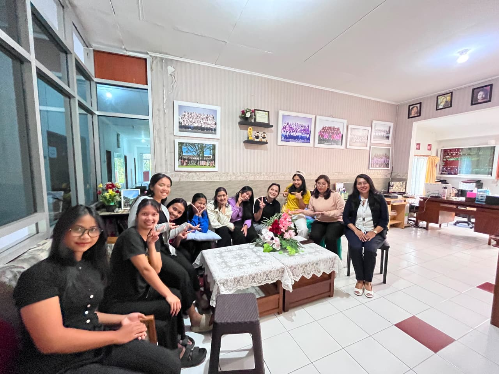
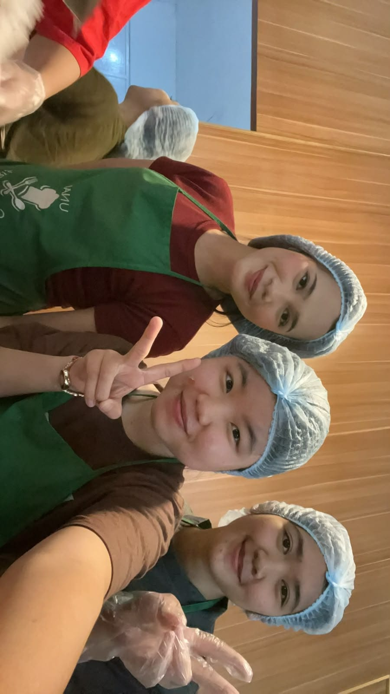
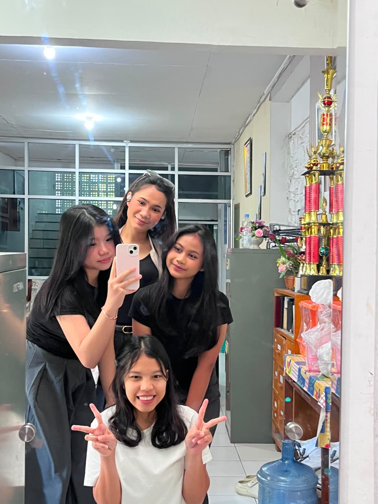
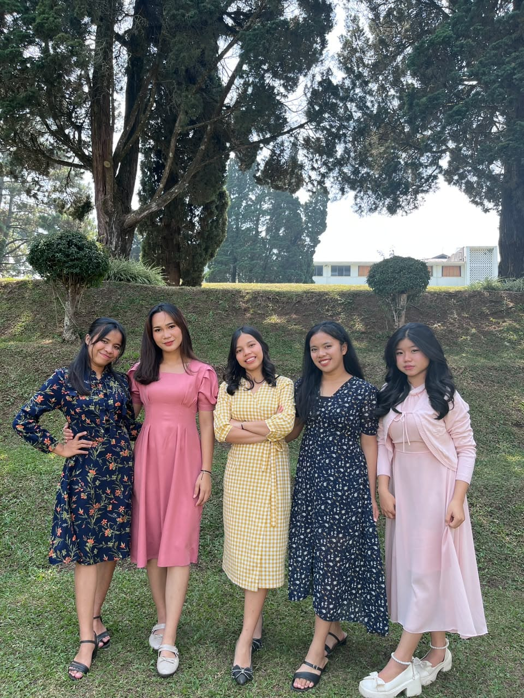
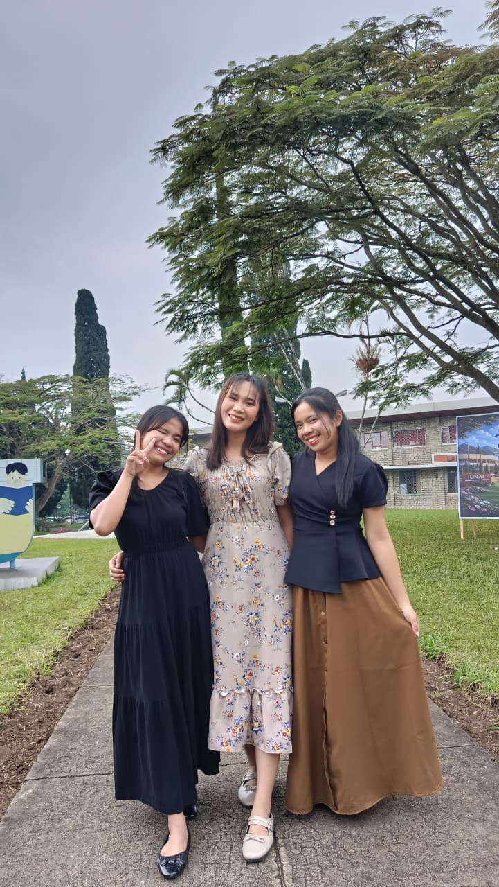
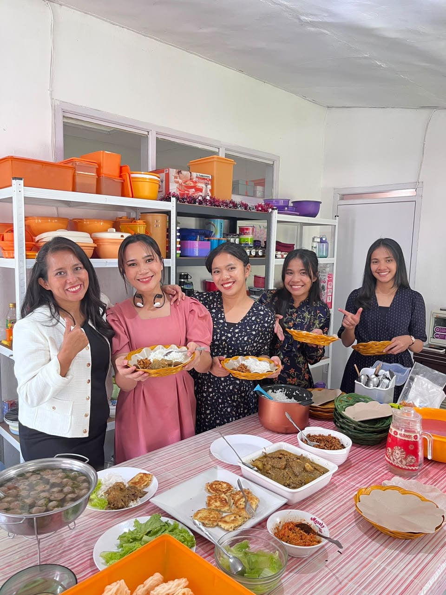

MY HOLIDAY SEMESTER
Nama: Radista Kristiana Manalu
NIM: 2582004
Pengalaman atau cerita libur semester kuliah







Tautan:
FTI UNAI
Media Sosial Saya
Cerita Liburan Saya
Selama saya liburan semester kali saya memilih untuk menghabiskan waktu degan bekerja di asrama putri. Awalnya saya merasa sedikit canggung karena harus menjalani rutinitas baru dan bertemu dengan banyak orang yang sebagian saya kenal, sebagian saya kenal.Namun,setelah beberapa hari,saya mulai merasa nyaman dengan lingkungan tersebut.Saya bertemu dengan banyak teman-teman yang berasal dari daerah dan memiliki karakter yang berbeda-beda.Kami sering mengobrol, bercanda,makan bersama,dan saling membantu ketika melakukan pekerjaan. Walaupun terkadang merasa lelah,saya tetap menikmatti kegiatan tersebut karena suasana bersama teman-teman membuat pekerjaan terasa lebih menyenangkan.Saya juga mendapatkan banyak kenangan selama berada dia asrama.
Selama bekerja di asrama putri, saya mendapatkan banyak pengalaman yang sangat berharga. Saya belajar untuk menjadi lebih mandiri,bertanggung jawab,disiplin, dan mampu bekerja sama dengan orang lain.Saya juga belajar bagaimana mengahadapi berbagai macam karakter teman dengan sabar dan saling menghargai. Tidak semua kegiatan berjalan dengan mudah, tetapi setiap kesulitan memberikan pelajaran baru bagi saya. Selain pengalaman bekerja, saya juga mendapatkan banyak cerita dan momen menyenangkan bersama teman-teman. Bagi saya, liburan semester kali ini bukan hanya sekedar mengisi waktu luang, tetapi juga menjadi kesempatan untuk belajar,berkembang, dan mengenal banyak orang baru. Pengalaman tersebut akan selalu saya ingat.
Liburan kali ini sangat menyenangkan.
Saya sangat menikmati pekerjaan dan menghabiskan waktu dengan teman-teman.